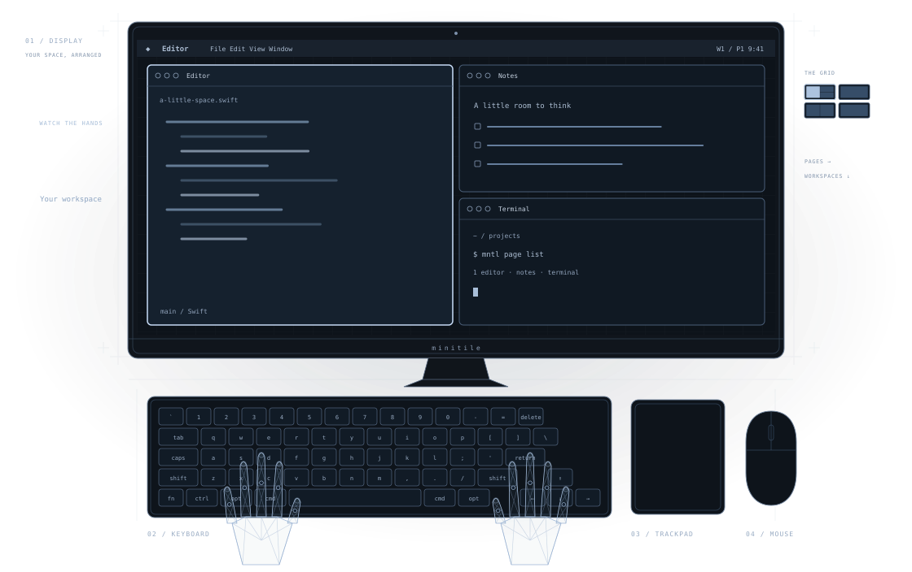

Small pages. More room.
One to four windows on a page. Pages run left to right; workspaces stack above and below.
A minimal tiling window manager for macOS. Your windows, in place. Your habits, intact.
Get minitile for macOS
Pages run across and workspaces run down. Each page holds up to four windows.
Built around the chords macOS already uses. Control and the arrow keys take you through your space. Add Shift to bring a window along.
No special modifier. No Caps Lock remap. Cmd+W still closes. Cmd+Q still quits.
Control+Left/Right navigates minitile pages instead of native Spaces. Control+Up/Down navigates workspaces instead of opening Mission Control or App Expose. Control+Option+Space cycles layouts instead of switching input sources.
Cmd+Tab switches windows instead of apps. Cmd+Backtick cycles all windows on the current page instead of just the current app's windows. Cmd+H toggles minitile's shortcuts instead of hiding the app, and Cmd+Option+H does nothing.
Bindings are configurable. Unbind a chord to leave it with macOS, or quit minitile to return these shortcuts to the system.
The switcher runs across the grid from the top-left. Add Shift to reverse Tab and Backtick. Backtick is the key marked ` on a US keyboard. Control+Option is also VoiceOver's default modifier; remap those bindings if you use VoiceOver.
One to four windows on a page. Pages run left to right; workspaces stack above and below.
Resize an edge. Swap windows with a drag. Or choose a new arrangement from the drop picker.
A native Swift app, a small menu, and your familiar desktop. The window manager stays out of the way.
Free and open source under the Apache 2.0 license. A focused tool for your Mac, with the source open to explore, change, and make your own.
mntlminitile keeps the pages you are not looking at on a second desktop, one per display. macOS does not let apps create desktops, so you add them yourself, once. A display with a single desktop is left untiled until it has two.
Connect a monitor later and add its second desktop the same way. minitile starts tiling that display within a few seconds, without a restart. Until then, the menu bar shows which display needs one.
minitile for macOS. Free and open source.
Download for macOSSigned and notarized. Requires macOS 26 or later on Apple silicon. Release notes
Or install with Homebrew:
brew tap fiorix/tap
brew trust --cask fiorix/tap/minitile
brew install --cask fiorix/tap/minitile